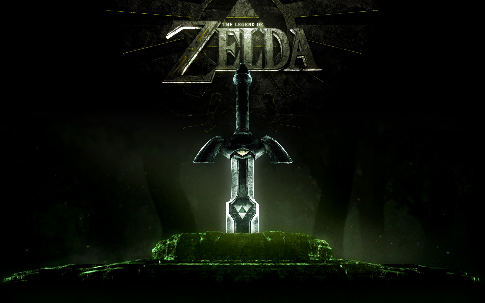
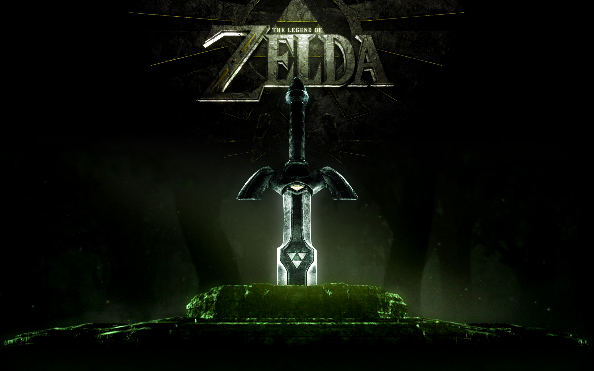

Historia
El contexto que rodea cada nueva aventura del Héroe de la Trifuerza es uno de los elementos más cautivadores del universo de The Legend of Zelda. Y si por separado lo que nos ofrece cada entrega ya es fascinante, puesto todo en conjunto se nos descubre una historia en la que el clásico viaje del héroe se entrelaza con una mitología construida para la ocasión, el ocaso y resurgir de un reino que es reimaginado de manera recurrente y la voluntad manifiesta de tres cualidades destinadas a manifestarse a través del jugador: la sabiduría, el poder y el valor.
Porque si el mayor enigma de la saga de The Legend of Zelda es la propia historia del reino de Hyrule, aquello que distingue a la saga de Nintendo de los inevitables sucedáneos son las sensaciones de aventura, logro y descubrimiento; y cómo éstas brotan de manera natural y cobran un sentido todavía mayor al conectar aquello que se nos revela en cada juego con ese gran misterio. Aventuras únicas y muy distinguibles entre sí que, sumadas, forjan una de las historias más influyentes jamás manifestadas a través de los videojuegos.
Porque da igual si la apariencia de Link recuerda a los dibujos animados o nos lleva a mundos más sombríos. Incluso la forma en la que se manifiesta el propio mal, o Ganon en la mayoría de los casos es un fin para un medio mayor: como comentamos, toda la saga de Zelda está conectada. Al menos, en lo referente a las entregas principales. Y es al unir los diferentes nexos que conectan una historia con la siguiente (o la anterior) donde se puede ver cómo se manifiesta la verdadera grandeza de la saga de Nintendo.
Galeria
 
